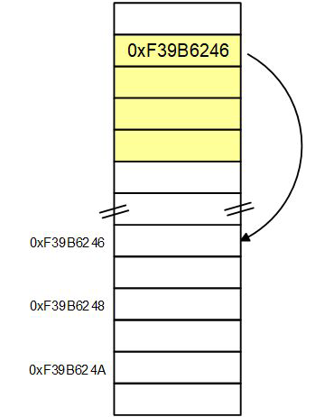

Punteros
Un puntero es una variable que almacena una direccion de memoria. A traves de este, se puede acceder o modificar el valor almacenado allí.
Uso:
- Acceder y modificar variables desde funciones.
- Manejar arrays y strings.
- Usar memoria dinamica (malloc, free).
- Estructura de datos (listas-lists, pilas-stack, arboles-tree)
- Eficiencia y control de memoria.
Cómo se declara?:
Sintaxis:
tipo_de_dato *nombre_del_puntero;Ejemplo:
int *pi;- pi: es un puntero
- Apunta a una direccion donde hay un int
- El * indica que es un puntero, no una multiplicacion.
- Para que el puntero tenga sentido, debe apuntar a una variable existente:
int x = 10;
int *pi;
pi = &x; // Direccion de memoria de x, pi ahora guarda esa direccion.
Acceder al valor usando un puntero (desreferenciar-object-of):
- Para acceder al contenido de la direccion a la que apunta el puntero se usa el operador * (Desreferencia-object-of):
printf("%d", *pi) Imprime 10.- pi: direccion.
- *pi: valor guardado en esa direccion.
Especificador de formato para direcciones:
- %p: El estandard para este especificador de formato esta definido para imprimir punteros a void. Es por esto que el compilador nos advierte que con &x le estamos pasando int *, pero espera void *.
- Para solucionar esto se hace un cast:
(void *)&x;
Teoría aplicada:
Makefile:
CC = gcc
CFLAGS = -std=c11 -Wall -Wextra -pedantic
PROG = declaracion
OBJ = main.o
$(PROG): $(OBJ)
$(CC) $(OBJ) -o $(PROG)
$(OBJ): main.c
$(CC) $(OBJ) -c main.c
.PHONY: clean
clean:
del $(OBJ) $(PROG).exe
Código:
// gcc -std=c11 -Wall -Wextra -pedantic main.c -o declaracion
#include
int main(void)
{
int x = 5;
int *pi = &x; //Declaracion y asignacion de memoria
printf("Valor de x: %d\n", x);
printf("Direccion de x: %p\n", &x); // El compilador espera que a la direccion se le haga un cast (void*)&x, pero lo deja pasar con solo un Warning, con esa solucion.
printf("Direccion usando pi: %p\n", pi); // El compilador espera que a la direccion se le haga un cast (void*)&x, pero lo deja pasar con solo un Warning, con esa solucion.
printf("Direccion de x: %p\n", (void *)&x); // Siguiendo el estandard
printf("Direccion usando pi: %p\n", (void *)pi); //Siguiendo el estandard
printf("Acceso al valor de x usando el puntero %d\n", *pi);
return 0;
}
Tamaño de los punteros
Se utilizara el sinonimo dimensión.
TODOS los punteros tienen la misma dimension/tamanio (usemos el sinonimo dimension para tamanio, para claridad en los comentarios). Sin importar a que tipo apunten, ya que su dimension proviene del tipo de arquitectura en 32 bits es de 4 bytes, en 64 bits es de 8 bytes, se puede verificar con sizeof()
sizeof(int *);
sizeof(float *);
sizeof(char *);
sizeof(double *);
No confundir con:
sizeof(int);
Ejemplo:
int *pi;
float *pf;
char *pc;
En una misma arquitectura, siempre sera cierto que:
sizeof(pi) == sizeof(pf) == sizeof(pc)
Para impimir sizeof(puntero a tipo de dato) usamos el especificador de formato %zu:
printf("%zu", sizeof(int *));
printf("%zu", sizeof(char *));
Van a imprimir lo mismo, que corresponde a la dimension del puntero en esa arquitectura.
No confundir:
int x;int *pi = &x;printf("%zu", sizeof(pi)); // Dimension del puntero pi. Mostrara 8 bytes. En arquitectura de 64 bitsprintf("%zu", sizeof(*pi)); // Dimension del tipo de dato al que apunta pi. Mostrara 4 bytes ya que sizeof(int) es 4 bytesRelacion con arrays:
int a[10]; // sizeof(a) da 10 * sizeof(int) = 10 * 4 bytes = 40 bytes
int *p = a; // sizeof(p); da sizeof(int *) = 8 bytes
Teoría aplicada:
Makefile:
CC = gcc
CFLAGS = -std=c11 -Wall -Wextra -pedantic
PROG = dimension
OBJ = main.o
$(PROG): $(OBJ)
$(CC) $(OBJ) -o $(PROG)
$(OBJ): main.c
$(CC) $(OBJ) -c main.c
.PHONY: clean
clean:
del $(OBJ) $(PROG).exe
Código:
// gcc -std=c11 -Wall -Wextra -pedantic main.c -o dimension
#include
int main(void)
{
int x;
char c;
double d;
int *pi = &x;
char *pc = &c;
double *pd = &d;
printf("int *:\t%zu bytes\n", sizeof(pi)); // Dimension de puntero
printf("int:\t%zu bytes\n", sizeof(*pi)); // Dimension de tipo de dato
printf("char *:\t%zu bytes\n", sizeof(pc));
printf("char:\t%zu bytes\n", sizeof(*pc));
printf("double *:\t%zu bytes\n", sizeof(pd));
printf("double:\t%zu bytes\n", sizeof(*pd));
return 0;
}
Operadores de punteros
Operador & (Direccionamiento:address-of)
¿Qué hace?:
Obtiene la direccion de memoria de una variable
int x;
int *pi = &x;
x:valor&x:xint *:tipo de dato de&x
Se usa para:
- Inicializar punteros.
- Pasar variables a funciones.
- scanf.
Operador * (Desreferenciacion:Indireccion:object-of)
¿Qué hace?:
Accede al valor almacenado en la direccion a la que apunta el puntero.
int x = 10;
int *pi = &x;
printf("%d", *pi); Muestra 10
pi:direccion dex.*pi:valor almacenado en esa direccion
Usar * sobre un puntero no inicializado da un comportamiento indefinido-Undefined Behaviour (UB)
Teoría aplicada
Makefile:
CC = gcc
CFLAGS = -std=c11 -Wall -Wextra -pedantic
PROG = operadores
OBJ = main.o
$(PROG): $(OBJ)
$(CC) $(OBJ) -o $(PROG)
$(OBJ): main.c
$(CC) $(CFLAGS) -c main.c
.PHONY: clean
clean
del $(OBJ) $(PROG).exe
Código:
// gcc -std=c11 -Wall -Wextra -pedantic main.c -o operadores
#include
int main(void)
{
int x = 10;
int y = 20;
/*
Operador & address-of
*/
int *p1 = &x;
int *p2 = &y;
printf("Valores iniciales:\n");
printf("x = %d, y = %d\n", x, y);
/*
Operador * Desrefenciacion, object-of
*/
printf("\nAcceso mediante punteros a los valores almacenados en la direccion apuntada:\n");
printf("*p1 = %d\n", *p1);
printf("*p2 = %d\n", *p2);
return 0;
}
Operaciones que admiten los punteros
Operador = (Asignacion entre punteros)
¿Qué hace?:
Copia la direccion de memoria, no el valor almacenado en esa direccion a la que apunta.
int *p1, *p2;
p1 = &x; // Inicializa el puntero almacenando la direccion en memoria de x
/*Se asigna la direccion del puntero p1 en el puntero p2,
ambos apuntan a la misma direccion que almacena el tipo de dato,
de este modo p1 y p2 apuntan a la misma direccion*/
p2 = p1;
Operadores de comparacion (==, !=, <, >, ≤, ≥)
¿Qué hace?:
- Comparan direcciones, NO valores.
if(pi == p2)Si apuntan al mismo lugar se cumple el bucle
Para comparar valores:
if(*p1 == *p2)Si almacenan el mismo valor en su direccion de memoria se cumple el bucle
Teoría aplicada
Makefile:
CC = gcc
CFLAGS = -std=c11 -Wall -Werror -pedantic
PROG = operaciones
OBJ = main.o
$(PROG):$(OBJ)
$(CC) $(OBJ) -o $(PROG)
$(OBJ): main.c
$(CC) $(CFLAGS) -c main.c
.PHONY: clean
clean
del $(OBJ) $(PROG).exe
Código:
// gcc -std=c11 -Wall -Wextra -pedantic main.c -o operaciones
#include
int main(void)
{
int x = 10;
int y = 20;
int *p1 = &x;
int *p2 = &y;
/*
Operador = Asignacion entre punteros
*/
p2 = p1; // Ambos apuntan a la misma direccion, la de x
printf("\n Despues de p2 = p1 los valores a los que acceden ambos punteros es:\n");
printf("*p1 = %d\n", *p1);
printf("*p2 = %d\n", *p2);
/*
Modificacion del valor almacenado en la direccion a traves del puntero
*/
*p1 = 50;
printf("\nDespues de modificar *p1 el valor de x almacenado en la direccion a la que apunta es:\n");
printf("x = %d\n", x);
printf("*p2 = %d (p2 apunta a x)\n", *p2);
/*
Operadores de comparacion
*/
if (p1 == p2)
{
printf("\np1 y p2 apuntan a la misma direccion\n");
}
return 0;
}
Aritmetica de punteros (+, -, ++, --)
¿Qué hace?:
- NO trabaja en bytes, trabaja en elementos del tipo apuntado.
- Un puntero "sabe" a que tipo apunta.
Operaciones permitidas:
+:p + n Donde n es un numero-:p - n++:p++--:p--p1 - p2:Solo si apuntan al mismo array
Operaciones que NO TIENEN SENTIDO con punteros:
p + p*:Multiplicaciónp * nCausa error/:Divisiónp / nCausa error%:Módulop % nCausa error- Operaciones con
float. - Desplazamientos (<<, >>)
- Operaciones lógicas (&&, ||)
Regla fundamental:
Si:
T *p;Entonces:
p + 1⇒ avanzasizeof(T)bytes. NO SUMA 1 byte. NO SUMA direcciones "a ojo".- Suma 1 elemento del
tipo T.
Ejemplo con array:
int a[5] = {10, 20, 30, 40, 50}; // vector de 5 elementos 0-4 de tipo entero llamado a
int *p = a; // Equivale a &a[0] es decir le esta asignando la direccion el primer elemnto del array declarado
p = p + 1;
/* Avanza sizeof(int) bytes,
apunta al siguiente elemento (a[1] cuyo valor en esa direccion es 20).
No suma bytes, suma elementos del tipo de dato.*/
- Si
sizeof(int) == 4cada+1, mueve4 bytes, pero eso es un detalle de implementación. - Un puntero solo puede apuntar a elementos validos del array. Un elemento despues del ultimo (ome-past-the-end) como puntero pero no se puede desreferenciar
- Un puntero NO puede desreferenciar fuera del array. Apuntar antes del primer elemento (
a[-1])
Valido:
int *p = a + 5; // Apunta "uno despues" de a[4]Invalido:
*p = *(a + 5); // Comportamiento indefinido(UB)
p = a - 1; // Comportamiento indefinido(UB)
- Especificador de formato
%td - Especificador de formato para imprimir valores del tipo
ptrdiff_tes%td
¿Qué es ptrdiff_t?:
Cuando restamos dos punteros del mismo array:
p - a; // No devuelve int, ni size_t, devuelve ptrdiff_t¿Qué representa?:
- La cantidad de elementos entre ambos punteros
- Puede ser positivo o negativo.
Se debe incluir para seguir el estandar, la libreria stddef.h
Teoría aplicada
Makefile:
CC = gcc
CFLAGS = -std=c11 -Wall -Wextra -pedantic
PROG = aritmetica
OBJ = main.o
$(PROG): $(OBJ)
$(CC) $(OBJ) -o $(PROG)
$(OBJ): main.c
$(CC) $(CFLAGS) -c main.c
.PHONY: clean
clean
del $(OBJ) $(PROG).exe
Código:
#include
#include //Puede omitirse porque no declaramos nada del tipo ptrdiff_t pero el estandar lo recomienda
int main(void)
{
int a[5] = {10, 20, 30, 40, 50};
int *p = a; // Declaracion y asignacion de la direccion del primer elemento del array, es decir apunta a a[0].
printf("p apunta a a[0] cuyo valor almacenado en esa direccion es: %d\n", *p);
p = p + 1;
printf("p + 1 apunta a a[1], cuyo valor almacenado en esa direccion es: %d\n", *p);
p++; //sumamos 1 elemento, llevandonos de a[1] a a[2]
printf("\np++ apunta a a[2], cuyo valor almacenado en la direccion es: %d\n", *p);
p = p - 2;
printf("\np - 2 vuelve a a[0], cuyo valor almacenado en la direccion es: %d\n", *p);
/*
One-past-the-end es valido como puntero
pero NO se puede desreferenciar
*/
p = a + 5;
printf("\np apunta a one-past-the-end (a + 5)\n");
printf("Direccion de p %p\n", (void *)p);
/*
Comparacion valida
*/
if (p > a)
{
printf("p es mayor que a (apunta a una direccion mas alta)\n");
}
/*
Diferencia entre punteros
*/
printf("\nCantidad de elementos entre p y a: %td\n", p - a);
return 0;
}
Punteros y Vectores
En C, un vector y un puntero NO son lo mismo, pero estan intimamente relacionados.
¿Qué es un array?:
Un array es un objeto que representa N objetos del mismo tipo, almacenados en memoria contigua, cuyo tipo incluye su tamaño.
int a[5] = {10, 20, 30, 40, 50};ano es una variable asignable.ano es un puntero.arepresenta un objeto de tipo "array de N elementos"
¿Qué pasa cuando usamos el nombre del array?:
En la mayoria de las expresiones, un array se convierte implícitamente en un puntero al primer elemento:
aSe convierte automaticamente en:
&a[0]Es decir:- Tipo:
int * Valor:direccion del primer elemento.
Ejemplo:
int *p = a; // Es correcto, se declara el puntero a int p y se le asigna la direccion de memoria del primer elemento de a[0]
int *q = &a[0]; // Es correcto y exactamente lo mismo que en la linea anterior.
Pero esto no convierte a a en un puntero, solo significa que en esa expresion se usa su direccion inicial
Excepciones donde NO decae(decay) en puntero.
sizeof(a)
&a
Inicializacion directa del array.
Diferencia fundamental con el puntero:
int a[5];
sizeof(a) // Es 5 * sizeof(int) = 5 * 4 bytes = 20 bytes su dimension
a = p; //NO PERMITIDO
No puede cambiar a que direccion de memoria apunta
Puntero:
int *p;
sizeof(p) // Dimension del puntero segun arquitectura
p = a; // PERMITIDO
Puede apuntar a otra cosa.
Acceso a elementos:
Misma sintaxis, distinto significado.
a[2] // Acceso al elemento 2 del array a.
p[2] // Acceso al objeto que esta 2 elementos despues de la direccion que guarda el puntero p.
Ambos significan:
*(a + 2)
*(p + 2)
[]: El operador [] es pura aritmetica de punteros.
Relacion formal entre punteros y arrays:
Por definicion del lenguaje:
a[i] == *(a + i)
p[i] == *(p + i)
Esto explica porque funciona esto:
int *p = a;
printf("%d", p[3]); // Imprime 40
&a NO es lo mismo que a
Esto es clave y suele confundir.
&atipo:int (*)[5]Puntero al array completoatipo:int *Puntero al primer int
Direcciones iguales, tipos distintos. Ej:
int a[5];
int *p =a;
printf("a\n", (void *)a);
printf("&a\n", (void *)&a); Direccion del array completo
printf("p\n", (void *)p);
Las direcciones se ven iguales, los tipos NO, el compilador las trata distinto
Un array no es un puntero, pero en la mayoría de las expresiones se convierte implícitamente en un puntero al primer elemento.
El operador [] está definido en términos de aritmética de punteros,
lo que explica por qué la misma sintaxis funciona tanto con arrays como con punteros.
Teoría aplicada
Makefile:
CC = gcc
CFLAGS = -std=c11 -Wall -Wextra -pedantic
PROG = vectores
OBJ = main.o
$(PROG): $(OBJ)
$(CC) $(OBJ) -o $(PROG)
$(OBJ): main.c
$(CC) $(CFLAGS) -c main.c
.PHONY: clean
clean:
del $(OBJ) $(PROG).exe
Código:
// gcc -std=c11 -Wall -Wextra -pedantic main.c -o vectores
#include
int main(void)
{
int a[5] = {10, 20, 30, 40, 50}; // Declaracion de un array de 5 elementos del tipo int con dimension 20 bytes(5*sizeof(int))
int *p = a; // Declaracion de puntero a int p y asignacion de la primer direccion de memoria del array a (a[0])
printf("a[2] = %d\n", a[2]);
printf("p[2] = %d\n", p[2]);
printf("*(a + 2) = %d\n", *(a + 2));
printf("*(p + 2) = %d\n", *(p + 2));
printf("\nsizeof(a) = %zu\n", sizeof(a));
printf("\nsizeof(p) = %zu\n", sizeof(p));
// Direccion de a cast a (void *)a. Ya que a (en esta expresion) decae a int *. &a es tipo: int (*)[5] array de 5 int(20bytes-array completo). p es tipo int *
printf("\na\t = %p\n", (void *)a); // Direccion a traves de a
printf("\n&a\t = %p\n", (void *)&a); // Direccion de a
printf("\np\t = %p\n", (void *)p); // Direccion del puntero p
return 0;
}
Pasaje de parametros por referencia
En C NO existe el pasaje por referencia como concepto del lenguaje. C siempre pasa los argumentos por valor.
Lo que hacemos en C es:
- Pasar la direccion de un objeto.
- Y operar sobre ese objeto a traves de un puntero.
Ejemplo clásico:
Porque NO funciona el "pasaje por valor"
void cambiar(int x)
{
x = 100;
}
int main(void)
{
int a = 10;
cambiar(a);
printf("%d\n", a); // Imprime 10
return 0;
}
Que sucede aca?
avale 10.- Se copia su valor en
x - Se modifica la copia.
anunca cambia
Esto es pasaje por valor puro.
Solución:
Pasar la direccion(Puntero)
void cambiar(int *p)
{
*p = 100;
}
int main(void)
{
int a = 10;
cambiar(&a);
printf("%d\n", a); // Imprime 100
return 0;
}
¿Qué sucede aca?
int a = 10; // Asignacion de variablecambiar(&a); // Direccion de memoria de a, se pasa esa dioreccion a la funcionvoid cambiar(int *p) // p recibe una copia de la direccion, p apunta a aDesreferenciacion object-of a:
*p = 100; // Se escribe en la memoria de a el valor 100, 'a' cambia.- No se paso 'a' por referencia.
- Se paso la direccion de a por valor
Relacion con arrays:
void imprimir(int *p, int n)
{
for (int i = 0; i < n; i++)
printf("%d ", p[i]);
}
Llamada:
int a[5] = {1, 2, 3, 4, 5};imprimir(a, 5);adecae a&a[0]- Se pasa un puntero
- La funcion accede al array original. Los arrays siempre se pasan por referencia en la practica
- Porque lo que se pasa es su direccion inicial.
Teoría aplicada
Makefile:
CC = gcc
CFLAGS = -std=c11 -Wall -Wextra -pedantic
PROG = parametros
OBJ = main.o
$(PROG): $(OBJ)
$(CC) $(OBJ) -o $(PROG)
$(OBJ): main.c
$(CC) $(CFLAGS) -c main.c
.PHONY: clean
clean:
del $(OBJ) $(PROG).exe
Código:
// gcc -std=c11 -Wall -Wextra -pedantic main.c -o parametros
#include
/* ---------- Ejemplo 1: PASAJE POR VALOR (NO FUNCIONA) ---------- */
void cambiar_valor(int x)
{
x = 100; // Se modifica SOLO la copia
}
/* ---------- Ejemplo 2: PASAJE DE DIRECCION (FUNCIONA) ---------- */
void cambiar_direccion(int *p)
{
*p = 100; // Se modifica el objeto apuntado
}
/* ---------- Ejemplo 3: ARRAY COMO PARAMETRO ---------- */
void imprimir_array(int *p, int n)
{
for (int i = 0; i < n; i++)
printf("%d ", p[i]);
printf("\n");
}
int main(void)
{
/* ===== Ejemplo 1 ===== */
int a = 10;
printf("Antes de cambiar_valor: a = %d\n", a);
cambiar_valor(a);
printf("Despues de cambiar_valor: a = %d\n", a);
/*
a NO cambia porque:
- Se paso el valor 10
- Se modifico una copia
*/
/* ===== Ejemplo 2 ===== */
printf("\nAntes de cambiar_direccion: a = %d\n", a);
cambiar_direccion(&a);
printf("Despues de cambiar_direccion: a = %d\n", a);
/*
a cambia porque:
- Se paso su direccion
- Se escribio en su memoria
*/
/* ===== Ejemplo 3 ===== */
int v[5] = {1, 2, 3, 4, 5};
printf("\nArray original:\n");
imprimir_array(v, 5);
/*
v decae a &v[0]
Se pasa la direccion del primer elemento
La funcion accede al array original
*/
return 0;
}